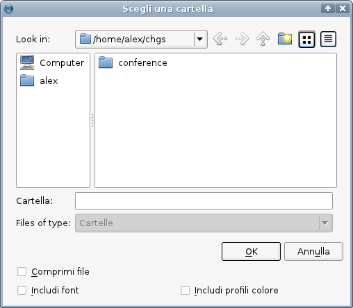
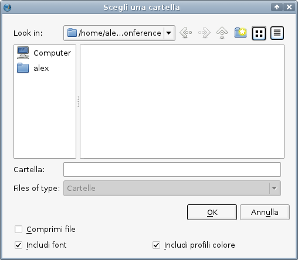
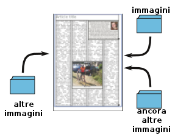
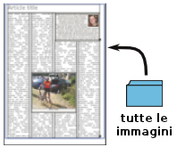

Raggruppa per l'output
Raggruppa per l'output è un modo speciale di salvare un documento di Scribus.
Se lavorate con Scribus su un solo computer, e se nessun altro lavora sui vostri documenti, potreste non aver mai bisogno della funzione raggruppa per l'output. Ma se lavorate su più computer, e specialmente su computer con sistemi operativi diversi (ad esempio uno con Linux e uno con Windows) potreste trovarla utile. E se siete in più persone a lavorare sullo stesso documento di Scribus, raggruppa per l'output sarà quasi indispensabile, o almeno è molto utile che sappiate della sua esistenza.
Se siete ben organizzati nel vostro lavoro con Scribus, probabilmente avrete un'apposita directory per ciascun progetto, con tutte le immagini e gli altri contenuti. Anche così, se volete che qualcun altro possa lavorare su quel progetto, potrebbe non bastare mandargli l'intera directory: potreste scoprire che mancano alcune immagini o che il vostro collaboratore non ha uno dei tipi di carattere usati nel documento.
Ma potreste trovare utile questa funzione semplicemente perché vi permette di riunire comodamente in una sola directory tutti gli elementi che compongono un progetto.
Il procedimento
In sintesi, raggruppa per l'output consiste in questo: si crea una directory per il progetto, e la si seleziona, dopodiché Scribus vi salva il documento con tutte le immagini che contiene, e, se volete, anche i file dei caratteri e i profili colore utilizzati. Non è strettamente necessario creare una nuova directory o selezionarne una vuota, ma di solito inserire nella directory soltanto i file relativi al progetto è la scelta più sensata.
Quando l'operazione viene eseguita, nella copia del documento inserita nella directory tutti i collegamenti alle immagini vengono opportunamente modificati. Vediamone un esempio.
|  |
Qui vogliamo “raccogliere per l'output” un progetto che consiste in un documento per una presentazione. Dopo aver selezionato File > Raggruppa per l'output, appare questa finestra di dialogo, in cui, come vedete, si lavora soltanto su directory. Abbiamo creato una nuova directory chiamata “conference”.
Nel passo successivo, selezioniamo la directory conference facendo clic su di essa. Per ora, non premiamo OK. |
|  |
Ora la nostra directory è selezionata, ed è vuota (questa finestra di dialogo mostrerebbe soltanto directory). In basso abbiamo contrassegnato le opzioni Includi font e Includi profili colore. Se avessimo contrassegnato anche Comprimi file, il file del documento Scribus verrebbe compresso in formato gzip, che potrebbe essere utile per un documento di grandi dimensioni; ma nel nostro caso non ce n'è bisogno. I nomi dei file compressi finiscono con .sla.gz.
Ora è il momento di premere OK. |
Il risultato
 |
Qui si vede ciò che Scribus ha inserito nella directory: diverse immagini, file dei tipi di carattere (quelli che terminano con .ttf) e profili ICC (quelli che terminano con .icm), oltre al documento conference_present.sla.
Ciò che è successo è che ora stiamo lavorando con questa nuova copia del documento, con tutti i suoi contenuti riuniti in questa directory, invece che con il file originale e i suoi contenuti, qualunque fosse prima la loro posizione. Si può aprire questo file come per ogni altro documento, raggiungendo la directory in cui si trova e selezionandolo.
Potete capire facilmente che tutto ciò rende molto più efficiente lo scambio del progetto tra i diversi collaboratori. Inoltre notate che questa funzione potrebbe essere usata per creare più versioni dello stesso progetto, ad esempio con immagini diverse, selezionando directory diverse per il salvataggio. |
Evitare problemi
Dovreste fare attenzione a non spostare o rinominare alcuno di questi file al di fuori di Scribus. Per capire perché, guardate che succede se lo fate.
A destra è mostrata la situazione iniziale, prima di eseguire raggruppa per l'output: abbiamo il documento di Scribus salvato in una certa directory, e inoltre varie immagini sparse in diverse directory. Quando diamo il comando raggruppa per l'output, tutti questi file si trovano ancora nelle loro rispettive posizioni.
Per ciascuna immagine, Scribus salva nel documento soltanto il percorso relativo alla posizione del file .sla.
|  |
| |
Dopo aver eseguito raggruppa per l'output, il file del documento si trova nella nuova directory, ma vi si trovano anche copie di tutte le immagini, e tutti i collegamenti relativi puntano a questa nuova posizione. Se cancellate o spostate un'immagine dalla directory, il riferimento all'immagine che si trova nel documento resta invariato, quindi l'immagine non sarà più trovata.
Una soluzione potrebbe essere quella di tornare al documento originale e rieseguire raggruppa per l'output, ma così perdereste le modifiche che avete apportato nel frattempo. Per evitare questo problema, potreste rinominare il file “raggruppato”, tornare all'originale, rieseguire raggruppa per l'output, e ripristinare il file rinominato.
Altrimenti vi toccherà riesaminare il file originale per individuare l'immagine mancante, oppure potreste trovarvi in situazioni ancora più complicate. Ecco perché è meglio evitare di spostare o cancellare file al di fuori di Scribus.
|  |